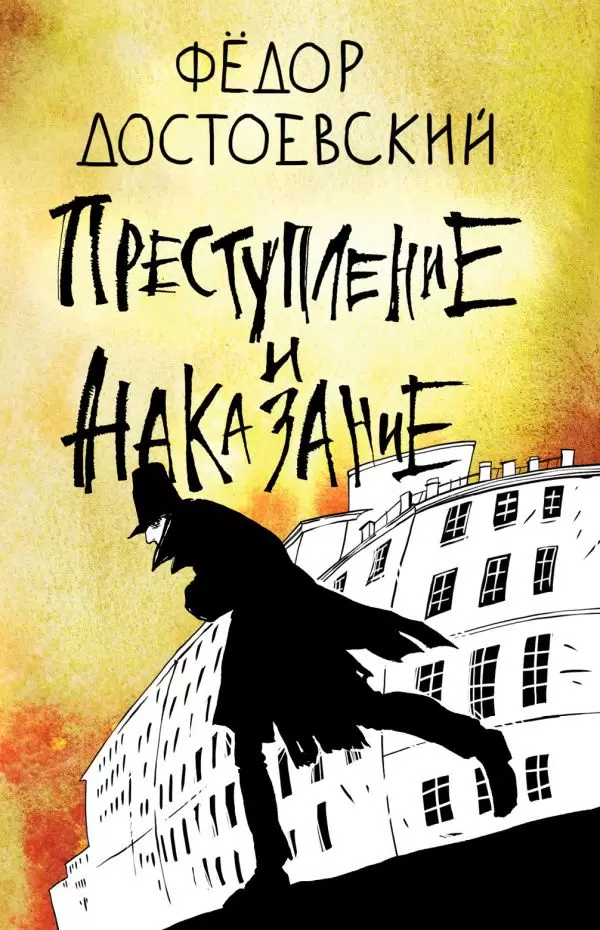

"Преступление и наказание" Достоевский Фёдор Михайлович

Федор Михайлович Достоевский – один из самых известных русских писателей.
Когда он был на каторге в Сибири, он часто думал о Боге, о жизни, о судьбах людей; там он встретил тех, кто считал себя выше других, и именно там у него родилась идея написания романа «Преступление и наказание».
Главный герой произведения – бедный студент Родион Раскольников. Он придумывает теорию о том, что люди подразделяются на две категории: «тварей дрожащих» и «право имеющих».
Вторые в его взглядах предстают сильными личностями, вершителями истории, которые могут распоряжаться чужими жизнями ради высоких целей и достижения каких-либо идеалов.
Первые же не способны ни на что и должны полностью подчиняться тем, кто «имеет право». Однако эта теория возникла в голове молодого человека лишь по стечению обстоятельств: на это повлияли проблемы с деньгами, уже давно испытываемые им, и его гордость;
отдельную роль сыграла и атмосфера той части города, где живет главный герой.
В ней все пропитано духом мрачной безысходности; серые и желтые пыльные здания давят на людей, повсюду встречаются нищие, пьяницы и падшие женщины.
На самом деле в характере Родиона Раскольникова больше благородных, хороших черт: он способен на сострадание и на любовь к ближним.
Это подтверждается во многих сценах романа: например, Раскольников отдал свои деньги для похорон едва знакомого ему Мармеладова, спасал детей при пожаре.
Особенно ярко способность героя к проявлению сочувствия и жалости проявляется во время описания его сна с эпизодом из детства, когда Родиону было невыносимо больно видеть забитую камнями лошадь.
Однако под влиянием собственных убеждений и трудного финансового положения такой человек решается на убийство старухи-процентщицы, планируя использовать ее деньги для помощи талантливым, но бедным молодым людям.
Но случается так, что во время совершения преступления молодому человеку приходится убить и свидетельницу – ни в чем не повинную сестру старухи.
Из-за этого его дальнейшая жизнь превращается в кошмар: Раскольников боится разоблачения и живет в постоянном напряжении, обманывая близких ему людей.
Он не может воспользоваться деньгами и вещами старой процентщицы и старается как можно лучше их спрятать. Молодой человек испытывает муки совести, хоть и пытается скрыть это от себя самого.
Однако в конце произведения, благодаря терпению, любви и искренней вере Сони Мармеладовой, Раскольников смог по-настоящему раскаяться в содеянном и начать новую жизнь, отвергнув свою жестокую теорию.
Принятие ложных и абсурдных идей неминуемо ведет к трагедии; во время признания в содеянном Соне Родион и сам понял это, сказав, что убил не старушку, а себя самого.
В романе ярко иллюстрируется, насколько тяжело становится тем, кто переступает через нормы морали и нравственности.
На примере Раскольникова видно, что путем насилия и смерти нельзя достичь ничего. Даже самые добрые и высокие намерения не могут окупить цену человеческой жизни, которую никто не вправе отнимать по своему желанию.
Человек, который все же делает это, наказывает сам себя, и это наказание в виде душевных страданий и отдаленности от близких намного страшнее и тяжелее, чем заключение или каторга.
Именно это осознал Родион Раскольников после совершения убийства: он ощутил себя полностью отрезанным от всего мира, и до момента признания вся его жизнь наполнилась переживаниями и страхом.
Писатель тщательным образом описывает все страдания такого существования, что несомненно вызывает у читателя жалость к главному герою.
Роман отражает взгляды самого Федора Михайловича Достоевского, считающего, что насилие не может привести к счастью и добру; только через гуманные и светлые поступки люди могут делать этот мир лучше.